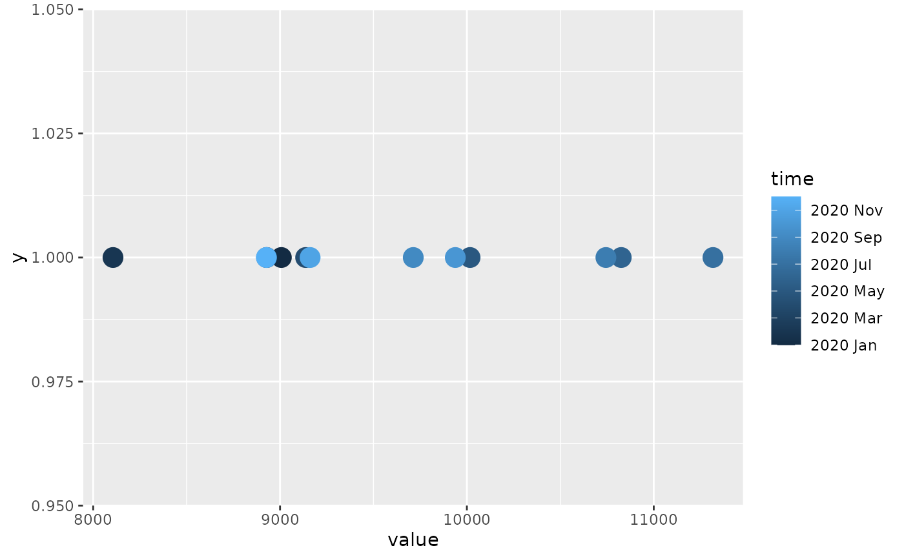

Beyond x and y, mixtime vectors can also be mapped to colour,
fill, alpha, size, and linewidth (e.g. to shade points or lines by
when they occurred). These are the default scales used for mixtime vectors
mapped to those aesthetics, and are automatically applied. To override the
scale's behaviour manually, use scale_*_mixtime.
scale_colour_mixtime(
name = waiver(),
...,
low = "#132B43",
high = "#56B1F7",
space = "Lab",
na.value = "grey50",
guide = "colourbar",
aesthetics = "colour"
)
scale_color_mixtime(
name = waiver(),
...,
low = "#132B43",
high = "#56B1F7",
space = "Lab",
na.value = "grey50",
guide = "colourbar",
aesthetics = "colour"
)
scale_fill_mixtime(
name = waiver(),
...,
low = "#132B43",
high = "#56B1F7",
space = "Lab",
na.value = "grey50",
guide = "colourbar",
aesthetics = "fill"
)
scale_alpha_mixtime(name = waiver(), ..., range = NULL, aesthetics = "alpha")
scale_size_mixtime(name = waiver(), ..., range = NULL, aesthetics = "size")
scale_linewidth_mixtime(
name = waiver(),
...,
range = NULL,
aesthetics = "linewidth"
)Arguments
- name
The name of the scale. Used as the axis or legend title. If
waiver(), the default, the name of the scale is taken from the first mapping used for that aesthetic. IfNULL, the legend title will be omitted.- ...
Arguments passed on to
continuous_scalescale_name![[Deprecated]](figures/lifecycle-deprecated.svg) The name of the scale
that should be used for error messages associated with this scale.
The name of the scale
that should be used for error messages associated with this scale.breaksOne of:
NULLfor no breakswaiver()for the default breaks computed by the transformation objectA numeric vector of positions
A function that takes the limits as input and returns breaks as output (e.g., a function returned by
scales::extended_breaks()). Note that for position scales, limits are provided after scale expansion. Also accepts rlang lambda function notation.
minor_breaksOne of:
NULLfor no minor breakswaiver()for the default breaks (none for discrete, one minor break between each major break for continuous)A numeric vector of positions
A function that given the limits returns a vector of minor breaks. Also accepts rlang lambda function notation. When the function has two arguments, it will be given the limits and major break positions.
n.breaksAn integer guiding the number of major breaks. The algorithm may choose a slightly different number to ensure nice break labels. Will only have an effect if
breaks = waiver(). UseNULLto use the default number of breaks given by the transformation.labelsOne of the options below. Please note that when
labelsis a vector, it is highly recommended to also set thebreaksargument as a vector to protect against unintended mismatches.NULLfor no labelswaiver()for the default labels computed by the transformation objectA character vector giving labels (must be same length as
breaks)An expression vector (must be the same length as breaks). See ?plotmath for details.
A function that takes the breaks as input and returns labels as output. Also accepts rlang lambda function notation.
limitsOne of:
NULLto use the default scale rangeA numeric vector of length two providing limits of the scale. Use
NAto refer to the existing minimum or maximumA function that accepts the existing (automatic) limits and returns new limits. Also accepts rlang lambda function notation. Note that setting limits on positional scales will remove data outside of the limits. If the purpose is to zoom, use the limit argument in the coordinate system (see
coord_cartesian()).
rescalerA function used to scale the input values to the range [0, 1]. This is always
scales::rescale(), except for diverging and n colour gradients (i.e.,scale_colour_gradient2(),scale_colour_gradientn()). Therescaleris ignored by position scales, which always usescales::rescale(). Also accepts rlang lambda function notation.oobOne of:
Function that handles limits outside of the scale limits (out of bounds). Also accepts rlang lambda function notation.
The default (
scales::censor()) replaces out of bounds values withNA.scales::squish()for squishing out of bounds values into range.scales::squish_infinite()for squishing infinite values into range.
trans- Deprecated in favour of
transform. callThe
callused to construct the scale for reporting messages.superThe super class to use for the constructed scale
- low, high
Colours for low and high ends of the gradient.
- space
colour space in which to calculate gradient. Must be "Lab" - other values are deprecated.
- na.value
Colour to use for missing values
- guide
A function used to create a guide or its name. See
guides()for more information.- aesthetics
The names of the aesthetics that this scale should be applied to, allowing this to be used with a different aesthetic (e.g. a custom aesthetic tied to
colourorfillbyggplot2::aes()/ggplot2::register_theme_elements()).- range
Output range for
size,alpha, andlinewidth, given as a numeric vector of length 2. IfNULL, the aesthetic's default range is used.
Details
Unlike scale_x_mixtime() and scale_y_mixtime(), these scales don't draw
a common time axis shared by multiple layers, so there is only a single
aesthetic column to map. The common chronon (and, for colour/fill, the
colour gradient) is still resolved the same way as the position scales,
with mixed granularities coerced onto the finest chronon they can all be
represented in and time_breaks/time_labels accepted for time-aware
breaks and labelling.
Examples
library(ggplot2)
df <- data.frame(
time = mixtime::yearmonth(600:611),
value = as.numeric(USAccDeaths[1:12])
)
ggplot(df, aes(value, 1, colour = time)) +
geom_point(size = 5) +
scale_colour_mixtime()
